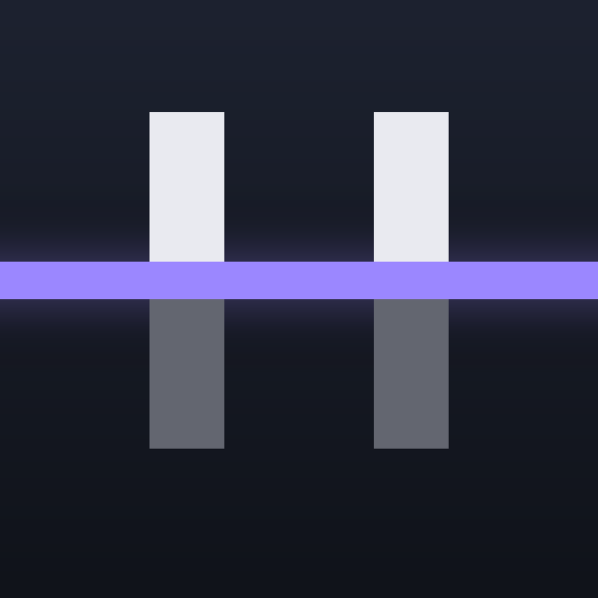
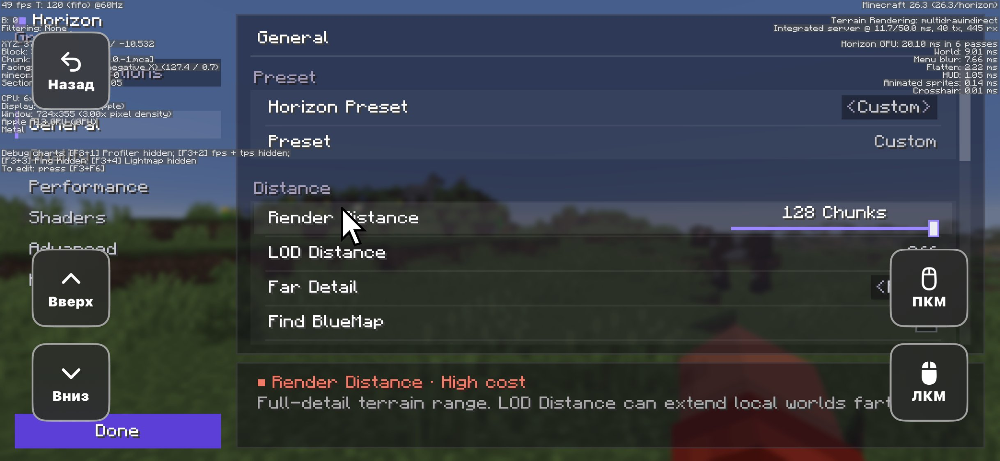

Minecraft: Java Edition 26.3Rust · iOS 17+Horizon: Знакомая игра.Теперь на iPhone.
Minecraft: Java Edition 26.3, переписанный на Rust. Порт Horizon для iOS с нативным лаунчером, сенсорным управлением и встроенными модами.
v0.2.0 · 48,6 МБЧто нового ↗О порте
Java Edition. С сенсорным управлением.
Horizon переписывает Minecraft: Java Edition на Rust. Этот неофициальный порт переносит его на iPhone: с нативным лаунчером, настраиваемыми кнопками и поддержкой модов Horizon.
Исходники iOS ↗
Что есть в порте
- Своё управление
- Двигай кнопки, меняй размер и прозрачность. Для меню и инвентаря есть виртуальная мышь.
- Моды Horizon
- Встроенные Rust-моды и каталог Horizon. Ресурспаки и шейдеры можно выбирать в Modrinth.
- Нативный лаунчер
- SwiftUI-лаунчер с импортом файлов игры, локальным входом по нику и входом через Microsoft.
Проект
Разрабатывается открыто.
Исходники, сборки и изменения iOS-порта доступны на GitHub. Здесь можно следить за релизами и сообщать об ошибках.
- РелизыIPA и описание изменений iOS-порта.
- Обратная связьОшибки, предложения и результаты запуска.
- ИсходникиКод порта и история его разработки.
- Как это устроеноУстановка, файлы игры и первый запуск.
Исходный Rust-проект: horizon-rust/horizon ↗
Участники iOS-порта
Автор iOS-порта — neosay-dev: нативный лаунчер, сенсорное управление, сборки и интеграция.
Переписывание Minecraft на Rust — работа команды Horizon ↗
17+
Версия iOS для установки порта. Для игры нужны ресурсы Java Edition 26.3.
Что есть в iOS-порте.
Возможности и текущие ограничения из README и описания релиза 0.2.0.
Открытые ошибки порта ↗01Нативный лаунчер
Доступно в портеЛаунчер на SwiftUI: запуск игры, файлы, управление, моды и настройки.
02Файлы игры
Доступно в портеРесурсы готовятся из твоей копии Java Edition 26.3 и импортируются через лаунчер или Finder.
03Локальный вход
Доступно в портеОдиночная игра и серверы без онлайн-проверки доступны с локальным ником.
04Вход через Microsoft
Доступно в портеДля серверов с проверкой аккаунта предусмотрен вход через Microsoft с купленной Java Edition.
05Сенсорное управление
Доступно в портеПеремещение, обзор, прыжок, атака, использование, приседание, бег и хотбар.
06Виртуальная мышь
Доступно в портеКурсор для меню, инвентаря и сундуков: нажатия ЛКМ и ПКМ, перетаскивание и прокрутка.
07Редактор раскладки
Доступно в портеКнопки можно двигать, менять их размер и прозрачность. Для меню есть отдельная вкладка.
08Системная клавиатура
Доступно в портеВвод имён и адресов серверов, названий миров, текста табличек и книг.
09Моды Horizon
Доступно в портеВ релиз 0.2.0 встроены Rust-моды из реестра Horizon; лаунчер позволяет включать и выключать их.
10Ресурспаки и шейдеры
Доступно в портеКаталоги Horizon и Modrinth для ресурспаков и шейдеров доступны в лаунчере.
11Мультиплеер и LAN
Доступно в портеПодключение к серверам Java Edition и мирам в локальной сети.
12Пауза и сохранение
Доступно в портеПри сворачивании игра приостанавливается и сохраняет мир.
13Возврат в лаунчер
ОграничениеВыход из игры завершает приложение. Чтобы вернуться в лаунчер, Horizon нужно открыть заново.
14Геймпады
ОграничениеПоддержка GameController для iOS пока отмечена в документации как незавершённая.
Доступно в портеОграничение